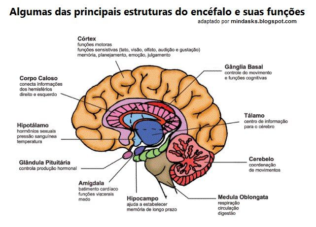

Funções do Cérebro
O cérebro comanda todas as nossas atividades e sentimentos, tais como os movimentos corporais, a memória e nossas emoções. Se somos capazes de andar, falar e refletir isso se deve à atuação conjunta de diversas regiões do cérebro.
Passe o mouse em cima da imagem.
